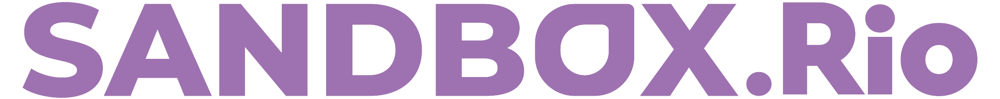
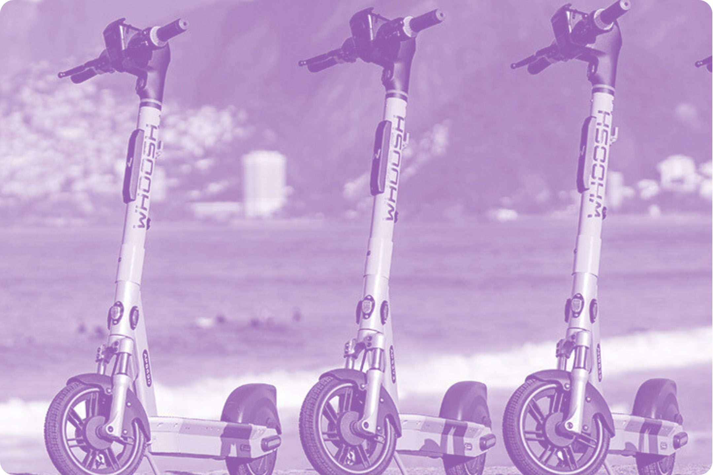

A Secretaria Municipal de Desenvolvimento Econômico, por meio da Subsecretaria de Regulação e Ambiente de Negócios, através da Nota Técnica DE/SUBRAN nº 02/2026, emitiu o Relatório Final sobre o projeto Patinete Rio, que analisou a operação experimental da atividade de patinetes elétricas compartilhadas no âmbito do programa Sandbox.Rio entre o período de 22/06/2024 e 31/12/2025 em regiões do Centro e Zona Sul do Rio.
O relatório é o resultado de um monitoramento contínuo que utilizou evidências e dados reais para avaliar a viabilidade do micromodal na cidade. O estudo se baseou na análise de dados sobre a operação e em pesquisas sobre benchmark internacional do modal e sobre o panoramda do quadro regulatório de outras municipalidades. Além disso, durante a execução do projeto foram recebidas contribuições de especialistas e da sociedade através da Consulta Pública nº 01/2025
Ao final, o relatório aponta as recomendações técnicas em oito eixos estruturantes para o aperfeiçoamento do quadro regulatório da Cidade, destacando a necessidade de substituição do Decreto Rio nº 46.181/2019 por uma regulamentação de caráter permanente.